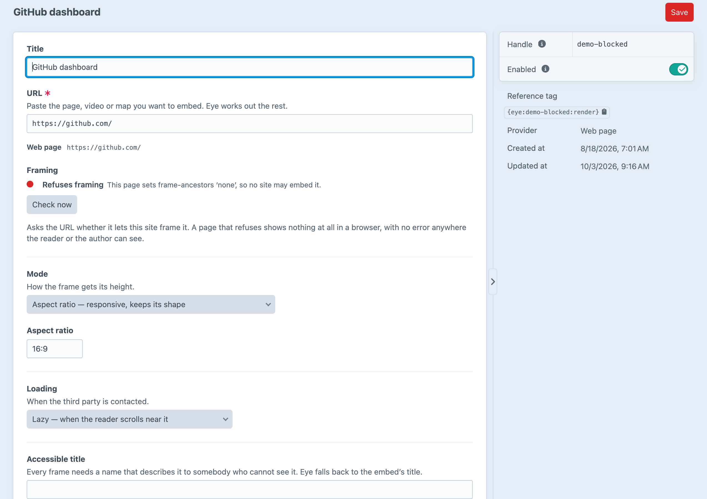

Iframes that behave.
Embeds that fit, wait, and tell you when they won't work.
Each one is a separate fix. Eye makes all four.
The real embed URL, the natural shape, the allow tokens and the cookie-free host.
The frame sits inside a <template>, so nothing is requested until the reader asks.
A refused frame gives the browser no signal. Eye reads X-Frame-Options and frame-ancestors when you save.

Serve a page that refuses framing from your own domain. Off by default, and it runs on an allowlist.